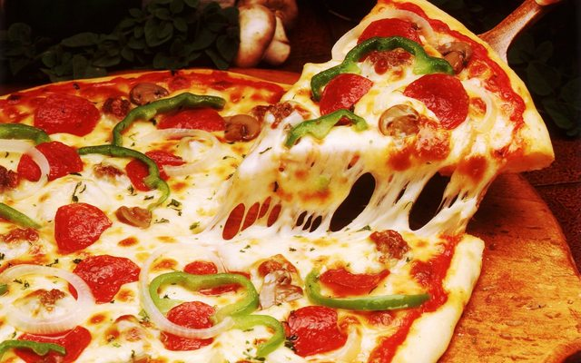

Pizza Mafia Recipe

Description
a dish of Italian origin, consisting of a flat round base of dough baked with a topping of tomatoes and cheese, typically with added meat, fish, or vegetables.
Ingredients
- Yogurt - 1 Cup.
- Margarine - 125 g
- Soda - 1 tsp.
- Flour
- Cheese - 300 g
- Mayonnaise - 5 l
- Chicken egg - 3 PCs
- Sausage
- Mushrooms
- Vegetables
- Canned fish
- Green olives
Steps
- Knead a soft dough.
- To distribute his hands on the oiled baking sheet.
- It is possible to grease with ketchup, add sweet chili sauce or regular tomato paste. But you can just not do.
- Put the stuffing. This time I put chopped cubes yellow cheese (this would be double pizza) and diced ham
- To prepare the dressing. Combine all the ingredients for it. Cheese cut into cubes, larger than one centimeter. All carefully stir.
- Pour on top of the pizza. Be sure to sprinkle oregano, or a seasoning for pizza, which contains oregano.